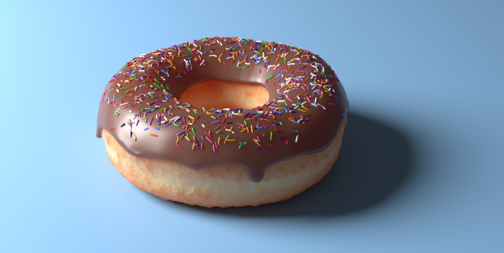

Blender Donut
This rendering of a donut is my very first project in Blender, I followed Blender Guru's Blender 2.8 tutorial.
It was this exact project that made me fall in love with doing 3D art! I plan on remaking this in the future with the newer 3.0 tutorial and perhaps some of my own knowledge to take
a different spin on it.

Tessa Schrock
Digital Art Student